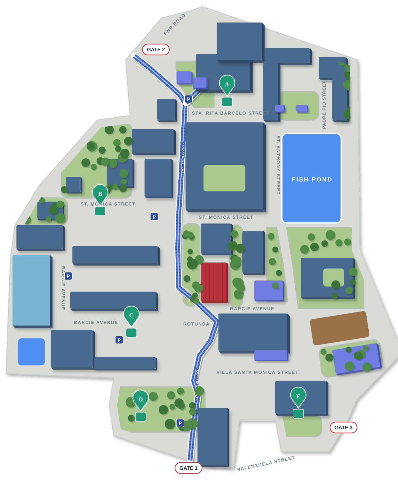

Campus Map and Routes
Place location markers, draw walking routes, and manage building floor plans.
Campus map base
The current SVG is served as a project asset. Confirm its official status and scale before changing it; marker positions below are stored separately in MySQL.
Visual Route Builder
Choose mapped start and destination locations, then plot the path on the campus map. Save a private draft or publish a route to guest navigation. Publication does not require location, marker, or walkway verification.

Click the map to add path points and drag them to adjust. Review each plotted segment before publishing the route.
Saved routes
Draft and incomplete routes stay private. Only completed routes appear in navigation.
Loading saved routes…
Add Pin Landmark
Enter a landmark name, then click its location on the map. Existing pins are shown to help you place it.
Floor plans
Walkway graph connections
Connections are separate from saved route descriptions. Only verified active connections are used for visitor path calculations. Distances are map units.
Loading connections…